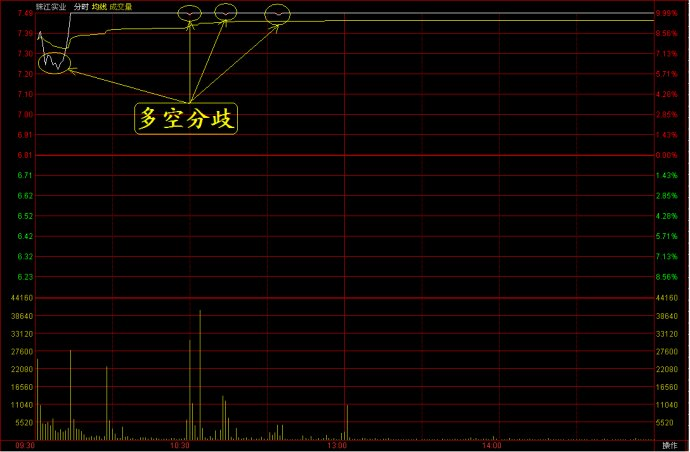
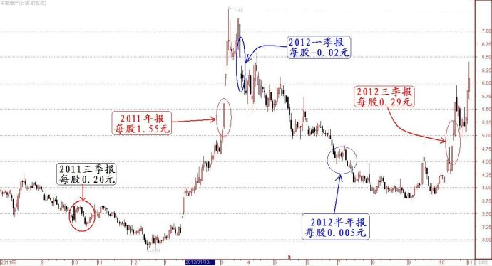

第277篇•对珠江实业暴涨的分析
谷为陵
这一周我都在写《教你炒股系列》，为了便于大家阅读方便，我中间没有停顿，一气赶出9篇，加之剩余的时间还要写书，所以，对于大盘和个股就无暇分析了。现在，关于主升浪形态问题只剩最后一个“前急后急型两波主升浪形态”没有讲，想必再需几篇文章就可收官了，心里也就不那么急迫了，现在可腾出一些时间来谈谈大盘和个股。
在大盘方面，本周上证指数走势与上周恰好相反，上周是下跌，这周是反弹。其中，上周五上证指数大跌了35.37点，而本周上证指数又大涨了35.55点。上周大跌没有什么利空，而本周的大涨也没有见到什么利好。那么，沪指在此位置忽跌忽涨，到底为何？我认为就是筑底。假若沪指能够在此位置再坚守一个多月，那么，从技术面看，对于多头将会是很有利的，因为所有的短中期技术指标都将出现多头排列。其中，上证指数5周、10周线将会与20周线产生金叉，这将意味着一个概率较高的小级别甚至是中级别的反弹行情。
另外，若能够在年初站稳脚跟，期间恰逢年报、季报公告期，也许会有些惊喜。我在《第266篇•晚间解盘》曾经谈到，假若明年初大盘出现一波反弹行情，市场会炒些什么股票，我当时指出：“由于每年年初是公告年报和季报的时间，所以，在这时候炒股票，一定会围绕业绩做文章的。业绩好的股票无非三类：一是老牌绩优股，如“药酒”之类；二是新生的业绩暴增股，如沧州大化之类；三是低市盈率的股票，如银行股、地产股等。在这三类股票中，我认为新生的业绩暴增股将会冒出较多的黑马，但怎样及早发现它们，却是一个难题”。
这还没到明年初呢，市场在三季报期间就开始炒起“业绩浪”了。这不，这波反弹的龙头股不就是珠江实业吗？该股三季报的每股收益达0.93元，在公告三季报时，该股股价还只有6.81元，动态市盈率只有（0.93/3）*4/6.81=5.5倍,于是该股就“暴动”了，连续拉出四个半涨停板，并带动了一些地产股出现跟风炒作。
怎样看待珠江实业的暴涨？该股暴涨对市场意味着什么呢？我有三点看法：
第一，该股上涨是多头力量在逐渐积聚的体现。虽然，珠江实业既属于低市盈率股，也属于业绩暴增股，被爆炒也是情理之中的，但地产行业毕竟是受政策打压的行业，其前景到底会如何，现在争议还是很大的，甚至比对股市的争议还大，具有很大的不确定性。这种不明确的预期实际上也反映在了珠江实业第一个涨停板上。当天，该股公告三季报业绩后，高开5.7%开盘，但很快就被打了下来。后来，在交易了10分钟后才又收上涨停板。但该涨停板并未封死，在上午被巨量打开了三次。这说明多空分歧还是很大的。该股当天分时走势如下图所示：

最终，还是多头占了优势，毕竟是封住了涨停板。现在的问题是，既然该股在第一天的涨停板都这么费劲，那该股其后几天应该出现放量的振荡走势，彻底清洗浮筹，以利继续上攻才对。但该股在第二天却高开后，再次封上涨停板。其后，该股越涨越猛，成为了市场这波小反弹的一只领涨股。
为什么该股在第一天还有些犹豫，而后来却越涨越猛呢？应该有两个原因：一是该股确实属于低市盈率的暴增股，有其上涨的内在理由，属于顺势而为，或者说，该股上涨并不会让人感到很意外、很牵强。二是该股在第一个涨停板时虽然艰难，但一旦该股走出了这个涨停板，那么，该股的强势特征就开始显露了，这对那些看好该股基本面，但担心市场不炒的投资者是一个鼓舞，他们通过该股的这一个涨停板，会认为该股会就此引发一波主升浪行情，于是在其后几天就会大胆抢进，买盘反而比第一天更强了。
这就是股市里的一个很耐人寻味的现象：一只股票即使大家都看着好，但若没有人率先发动行情，那么，该股也许会沉寂很久。只有等到有人振臂一呼，将股价打起第一个涨停板，那么，就会一呼百应，跟风盘就汹涌而至，股价越炒越高。对这个现象最好的解释就是索罗斯的反射理论（也称为反身性理论）。
反射理论认为，市场不是客观的、孤立的，而是由参与者与市场本身融合在一起的“复合体”（注：“复合体”是我起的名字），是主客体的统一。在这个“复合体”里，主客体相互影响，是互动的关系。反射理论精髓是“观念改变现象，而现象又反过来改变观念”，俗称“反射”或“反馈”。反射之所以奏效，是因为参与者不清楚客观真相到底是什么，而事实上他们自己的行为就是真相本身。索罗斯认为，决定参与者是买还是卖，完全在于参与者的“预期”——“预期”将要发生什么。我可以举个例子，如果你把一只好狗拴起来并用脚踢他，说它是“坏狗”，那这只狗就真的会变得凶狠，开始咬人，这样一来就会招致更多的踢打，它也会更加疯狂地咬人。我再举一个例子。假若一只股票处于长期横盘状态，这时候，你“预期”该股应该到了上涨时候，随着某一天该股真的开始出现上涨迹象，这一小小上涨又会受到更多的像你一样的早已经盯了它好久的投资者的注意，他们看着股价“启动”了，就更加预期该股要涨了，于是，你和这些人纷纷买进，结果因为你们的参与跟风，该股最终果然大涨了。到底是因你们参与后该股才大涨的呢？还是股价本来就命中注定要涨，而你们只是碰巧顺势买进的呢？真相是什么？
不管真相是什么，这一幕现在就发生在珠江实业身上。随着该股启动第一个涨停板，该股就被激活了，而出现其后的连续暴涨。有人会说，也许该股暴涨的真相应是因该股价值低估造成的。但我不这样认为，假若该股的暴涨是因其公告三季报后体现了价值陡升，而显得价值被严重低估，那么，该股就应该在三季报公告当天直接出现一个巨量封死的“一字涨停板”，或者第二天出现这样的情况，因为我们经常看到那些公告重大利好题材的股票会出现连续3～4个“一字涨停板”，但珠江实业的几个涨停板都是在盘中经过巨量换手涨上去的，这说明该股的上涨过程是一个价值逐渐被发掘、跟风盘逐渐进场的过程。
跟风盘敢于追涨一只暴涨的地产股，这应该说明市场的做多力量是在逐渐积聚的。
其二，珠江实业的后市将怎样发展？我认为存在两种可能性：一是继续上涨后，并在股价高位站住。但这要求该股的年报业绩也很出色，假若该股年报每股收益能够达到1.3元，那么，股价站稳在10～13元甚至更高还是有可能的。二是在暴涨后出现暴跌，假若该股年报不出现增长，每股收益只在1元左右，且明年第一季报很差，那么，该股就会出现大跌。这样的案例在地产股中曾经出现过多次，因为地产股的业绩并不稳定，从而造成股价大幅波动。
其中，较为典型的案例就是中航地产（000043）。该股2011年三季报每股收益为0.2元，但2011年年报的每股收益却高达1.55元，导致该股出现暴涨。但出人意料的是，该股2012年的第一季报却亏损了0.02元，由此股价又紧接着出现暴跌，直到今年中报时，该股每股收益也只有每股0.005元的微利，使得该股持续下跌到3.8元（前复权）。但该股业绩实在是妖性十足，今年三季报的每股收益又暴增到0.29元，使得该股又出现了一轮暴涨行情，股价从3.8元上涨到了约6.5元。该股今年业绩和股价的暴涨暴跌情况如下图所示：

在宏观调控的大背景下，地产股的收益会呈现很明显的不稳定性，那些小盘地产股由于抗风险能力更低，业绩不稳定性会更高。从这两年的情况看，珠江实业虽然算是一个小盘子地产股，但其业绩的稳定性还算是较高的。但这种业绩的稳定性能否保持，现在还不太好说。所以，我估计投资者现在还只能将其看成投机性的业绩暴增品种，暂时不会将该股纳入成长股的范畴，这两者的最明显的区别，就是市盈率定位不同，成长股的市盈率定位一般在30倍以上，但地产股的市盈率一般在10～15倍。
其三，投资者对于珠江实业的这轮炒作，可能还或多或少的与海外热钱即将进入内地市场的预期有关。近期海外热钱大量流入香港市场，导致恒生指数大涨，楼市价格上升，迫使港府连续进行干预。现在有人预计这些热钱可能会变相进入内地市场，将对内地的楼市和股市造成一定的冲击。若果真如此，投资者会预期房地产价格难以下跌，那么，地产股的业绩将能够持续增长。
总之，我们应该透过现象看本质。珠江实业虽然只是一只普通的地产股，但通过它的暴涨，我们还是能够得出某些市场信息的。假若低市盈率的地产股能够被爆炒，那么，其它低市盈率的股票若也能出现业绩暴增，是否也会被爆炒呢？这是我提出的一个问题。